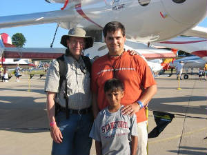

|
I'm a life-long airplane nut who happens to be married to a wonderful woman who tolerates my enthusiasm for all things
aeronautic. She even likes flying with me, so I guess I'm pretty lucky compared to many who share this particular addiction.
My home town is Dayton, Ohio, where my grandmother lived in the same neighborhood as the Wright Brothers when she
was a little girl, and she knew the Wright family. My father was an engineer at what was then known as Wright Field
(now Wright-Patterson Air Force Base), and among other things led early work on the first US ejection seat at the end of WWII.
I remember clearly when I was perhaps four or five years old, my dad built a small blue and yellow free flight model, and
flew it over the corn fields of my grandfather's farm. The sight and sound of that model climbing up and up into the
blue summer sky until the engine quit, then drifting away in lazy circles, remains with me to this day. I suppose that's
where it all started.
I built models of all types while I was growing up, though most were rubber powered.
We didn't have a lot of money, and my small allowance wouldn't purchase more than a couple of glow-ignition engines over
the years. So, it was gliders and rubber-powered models, plastic kits, a few .049-size control line types, one Wakefield,
even a try at crude indoor models (covered with condenser paper and flown outdoors on calm days). Later, my dad bought
one of the early single-channel radio control systems and put it in a small rudder-only plane that we used to fly at the local
park when I was in high school.
I studied electrical engineering at the University of Cincinnati, which
was (and still is) a co-op university. That is, we worked for a quarter and went to school for a quarter, alternating
work and study on a five-year degree program that gave me enough income to pay for school, buy a car and
get a private pilot's license. Sadly, at today's university costs, that scenario is no longer possible. When
I graduated, we were in the midst of the Viet Nam War, so I signed up to join the Navy while I was in my senior
year. After graduation, it was off to Pensacola for Aviation Officers' Candidate School. My eyesight was just
outside the tolerance to be a Navy pilot at the time, so I became a Naval Flight Officer and flew as a Tactical Coordinator
in P-3 Orions. After one active duty tour, with a wife and small child, I decided to leave active duty
and went to work for Electronic Data Systems, back when it was still majority-owned by Ross Perot. Ross Perot's
public image suffered a bit under the media scrutiny of a presidential campaign, but he was probably the most inspirational
single individual I've ever met, and I'll let it go at that.
After seven years at EDS and ten or twelve
relocations, we decided to look for something more stable, and I found a job with Boeing in the Seattle area. I stayed
in the Naval Reserve throughout, eventually becoming C.O. of P-3 squadron VP-69 at NAS Whidbey Island. I'm now retired
from both the Naval Reserve and Boeing, but have returned to Boeing as a contract employee. My Boeing career has been
centered on maritime patrol aircraft systems and software development, including nearly eight years in the United Kingdom
working on the Nimrod MRA4 aircraft project, and have been working on the P-8A program at Boeing since 2005. The P-8A
is based on the Boeing 737 airframe, became operational with the US Navy in 2013, and is now well on the way to replacement
of the aging P-3 fleet.
My personal flying activity has included the acquisition of commercial, instrument, multi-engine,
instructor and instrument instructor ratings with my GI Bill benefits during the first few years after my active duty tour.
Later I added a commercial glider rating, and most of my flying for the past several years has been in gliders.
I think gliding makes flying a truly enjoyable and affordable sporting pastime. After an hour of boring holes in the
sky or shooting touch and goes in a power aircraft (and thinking about how much money you are spending), power flying gets
boring pretty quickly if you aren't going somewhere or seeing something new. In a glider, however, you can launch at
noon, stay up for four or five hours and never leave sight of the home airport, but the whole time can be fun and simulating.
There's just something about watching that altimeter needle climb with no engine pulling you up, accompanied by the constant
mental challenge of working the current lift while thinking about finding the next patch, that keeps you on your
toes and provides a real sense of satisfaction.
Building my own full-size aircraft has been a personal goal
for forty years or so. I joined EAA while I was in college and acquired some early homebuilt aircraft information
packets, back when all you could get were rolled drawings and little else from the designer. It was then up to
you to figure out where to buy materials and acquire the necessary building skills. As for most people who aspire to
build a homebuilt aircraft, career, family and home intervened for a long time, but eventually I bought a set of Skybolt
plans in 1972 and started cutting and welding steel tubing. Progress was slow to stopped for a few years and I carted
the fuselage side frames through three house moves before eventually deciding that a two-place open cockpit biplane just wasn't
practical for me and my family. I sold the Skybolt project and bought a BD-4 kit that had been partially completed by
a high school shop class. Before I got very far on that effort, however, I decided that I just wasn't happy with the
workmanship that had preceded mine, so I sold that one, too.
Meanwhile, Burt Rutan had sprung the Varieze
and LongEZ on the homebuilt community, then Nat Puffer came up with the 3-place Cozy. I bought a set of plans for that
airplane, but between a demanding job at Boeing and a second career in the Naval Reserve, there just wasn't time to commence
construction. Nat also began work on a 4-place version, then announced that he was going to offer plans. I bought
one of the first sets of plans for the Cozy MKIV, but they languished until my retirement from the Naval Reserve in 1995 gave
me some free time. I started the Cozy in 1996 and made reasonably steady progress for a few years, during which our
kids grew up and moved away, so the need diminished greatly for a 4-place 200 mph cross country aircraft that was going to
take me another five years to complete.
So, that's why I'm building this particular aircraft. My
objectives have changed and I'm turning the Cozy project over to my son to complete. The Cozy is scratch-built except
for a few prefab metal bits and pieces, and with over 2,000 hours invested in that project so far, I figure I'm about half
done, even though the airframe is nearly complete. The Pipistrel, however, is a much more highly prefabricated kit,
which you can see for yourself by looking at the kit build manual on the Pipistrel web sites.
I still enjoy
model aircraft -- mostly radio control in recent years, and lately electric-powered versions. They are quiet,
clean, and the weight and power density of the battery-motor combinations is now equivalent to glow engines. The advances
in battery chemistry now available on a small scale make me optimistic about the near-term potential for an economically viable
move away from petroleum as the basis for daily personal transportation. Since I first wrote this biography, Pipistrel
has done some very impressive work in the electric flight arena, including winning a 1.35 million dollar CAFE-Google Green
Flight Challenge prize in 2011 with the Taurus G4 electric aircraft, achieving a truly outstanding 403 passenger-miles per
equivalent gallon of gasoline while flying 200 miles at over 100 miles per hour. More recently, Pipistrel has developed
and now offers the Alpha Electric trainer, with performance exceeding the Rotax-powered version for an endurance of one hour
with 30-minute reserve. That's very impressive progress in only a few years, although getting to truly practical electric
flight will require significant further advances in energy storage, which is another whole discussion....
I initially figured that I could possibly get my Pipistrel done in time to fly it to Oshkosh Airventure 2007, but that was
optimistic in light of other things that I need to spend my time on, such as building the house and attached hangar where
we now live. I tell people that if I were building a second Pipistrel kit, working on it full time and taking advantage
of everything I'm learning on this one, that I could get it done in a month, and I still think that's realistic. But
few people build more than one aircraft, and fewer still build the same type aircraft more than once. Most will find,
as I have, that the kit is very complete and very high quality, but it takes time to study, understand and complete all the
construction tasks the first time around. I think six to twelve months of construction time is a reasonable
estimate -- more than that if you don't keep at it steadily, and less if you have nothing else to do with your time.
|

|
This is me, my son, Jon, and my grandson, Amal, at Oshkosh 2005 in front
of Space Ship One. We had a great time and brought home a lot of memories. Jon and I flew to Oshkosh from Washington
State in a Piper Arrow in 1991 when he was still in high school. That was a real adventure -- camping with the plane
at airports along the way, sharing the whole aviation experience, and seeing a lot of America from the air. I look forward
to doing a lot more recreational sight-seeing with the Sinus, while enjoying soaring opportunities around this beautiful country.
|
|